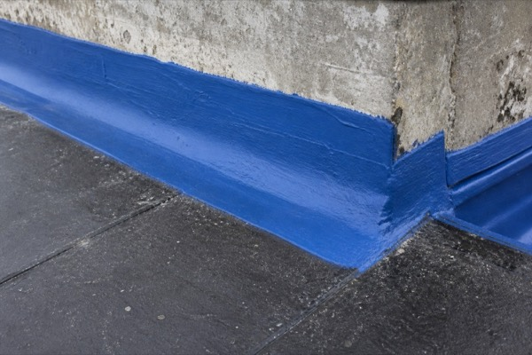
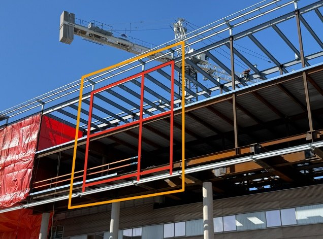
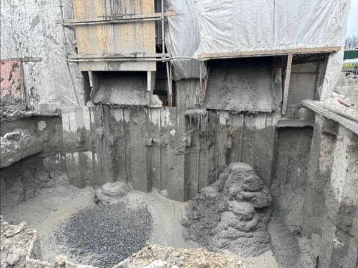
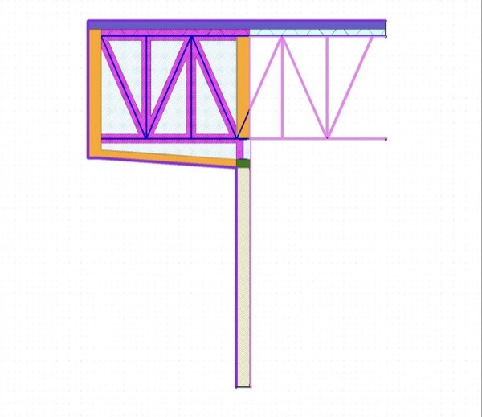
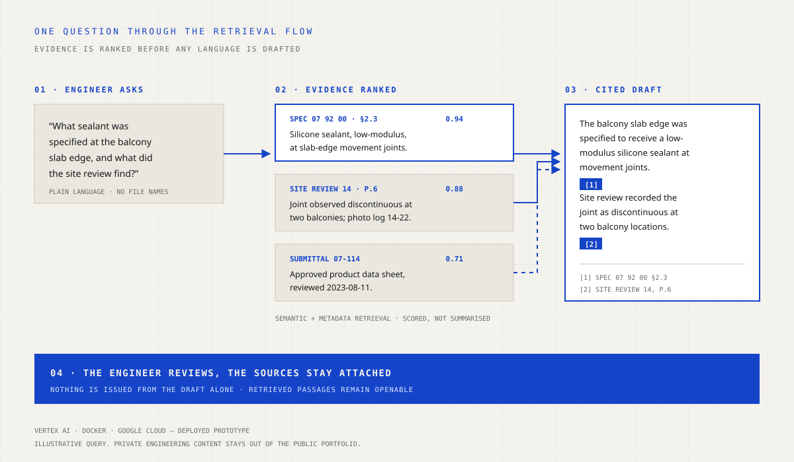
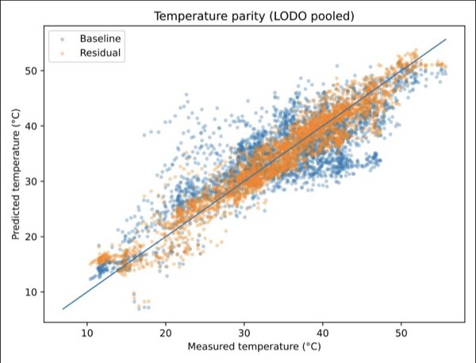
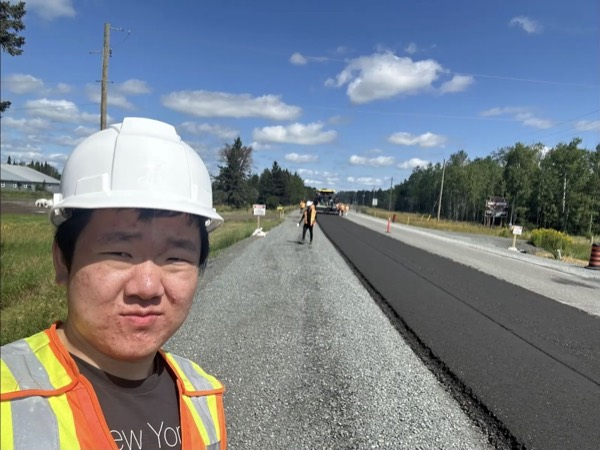
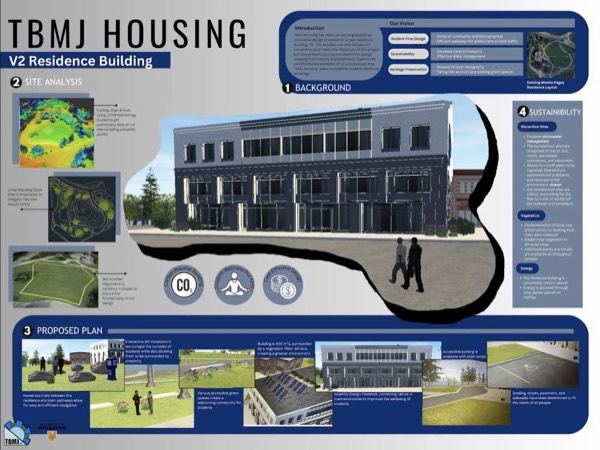
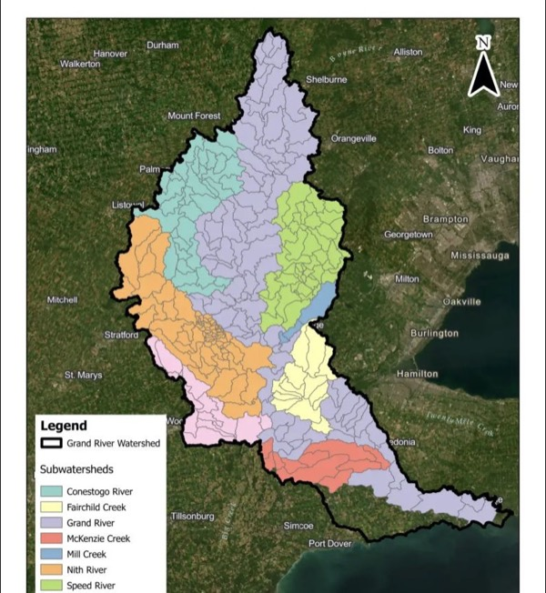

Structure. Envelope. Code.
I’m Thomas Gao, a civil engineering student at the University of Waterloo. I want to design structures and the envelopes around them. Four co-op terms have put me beside caisson rigs on the Ontario Line, on restoration sites, and in thermal models of envelope junctions. I also write my own tools: a frame solver that checks SAP2000, and a search engine for site photos.
Open to co-op roles, January to April 2027
- 4.0 GPA Civil Engineering at Waterloo, class of 2028
- Four co-op terms Entuitive, Brown Beattie, Green Infrastructure Partners
- First-author paper On Canada’s largest solar farm, Processes 2026
Start with the frame.
Take the cladding off and a building is a load path: slab to beam, beam to column, column to caisson. I have worked both ends of it: a steel frame in the analysis model, and the caissons going into the ground at Pape Station.
Lateral drift, exaggerated so the deflected shape is visible. Let go and the frame springs back. An illustrative model, not a design.
- Steel frame analysis and verification I re-solved our SAP2000 model of a two-bay steel frame with a direct-stiffness solver I wrote. Total load agreed within 4.7%, but the support reactions differed by up to 1.4 kN. The likeliest cause: the property table we submitted was not the model we ran.
- Deep foundations at Pape Station One co-op term on the below-grade work for an Ontario Line station: tracking RFIs and submittals, documenting load tests, and keeping quantities and as-builts current across diaphragm walls, caissons and shoring.
Then the skin.
The envelope decides where the heat goes, and the weak points are the junctions: slab edges, balconies, parapets. At Entuitive I modelled those details in Flixo, THERM and HEAT3 for energy-code compliance. Most I modelled twice, as built and as retrofitted, so the two could be compared.
As built: slab edges, balconies and parapets run straight through the insulation, so that is where the heat leaves.
An exterior thermogram of the model on a cold night. Illustrative, not project data.
- Envelope thermal-bridge studies A steel roof-to-wall connection and a balcony slab, each modelled from existing to continuous insulation to show whether the insulation path stays unbroken around the junction.
- Restoration field review at Brown Beattie Inspected waterproofing and concrete repair on restoration sites, and coordinated rehabilitation projects from tender review through substantial performance.
Then the data.
A project leaves behind thousands of site photos and reports that nobody can search. I build tools that read them. They use vision models to tag what is in a photo, hybrid retrieval to find it, and language models to draft from cited sources.
ProjectSearch: find a site photo by what is visible in it
blue waterproofing membrane at the north parapet

Main roof, north parapet96% match
Blue liquid-applied waterproofing turned up the north parapet upstand, terminating on concrete.
Four sample records. The real tool pins every photo to a 3D model of the building, as the model here does. I built it during my Entuitive co-op, where it is under internal evaluation.
- ProjectSearch Type what you remember seeing and get the photo, pinned to its place on a 3D model of the building. Semantic and keyword search, fused and reranked, with a confidence rating on every field.
- Engineering retrieval and report drafting Ask a question across engineering documents and CAD metadata and get the source passages before any drafted text. Deployed on Google Cloud with Vertex AI.
- Travers Solar: capacity and temperature First-author paper on a 465 MW plant. A residual model on top of the physics cut module-temperature error by about half (MAE 2.99 to 1.43 °C, R² 0.60 to 0.91), and automated ASTM E2848 record selection closely reproduced a manual review.
Selected work
Nine case studies. Each one shows the evidence, the method and exactly which part was mine.
-

Steel frame analysis and verification
A two-bay steel sub-frame surveyed on site, modelled in SAP2000, then checked with a direct-stiffness solver I wrote.
-

Deep foundations and support of excavation
Construction coordination at Pape Station: RFIs and submittals, test records, quantities and as-builts for diaphragm walls, caissons and shoring.
-

Envelope thermal-bridge studies
2D steady-state models of roof-to-wall and balcony-slab junctions, each run with existing and retrofit insulation.
-
ProjectSearch
Index an engineering photo share, then search it in plain English by what is visible in the image.
-

Engineering retrieval and report drafting
A citation-first retrieval prototype for engineering documents and CAD metadata, containerized and deployed on Google Cloud.
-

Travers Solar: capacity and temperature
Automated ASTM E2848 capacity-test selection and a residual temperature model for a 465 MW solar plant, published in Processes.
-

Highway design and pavement QC
Civil 3D design support for two highway redesigns, then field and laboratory QC on Superpave and CIREAM paving.
-

Residence site redevelopment
A team redevelopment concept for a student residence site. I led the Civil 3D drawing and grading and planned the accessible circulation.
-

Grand River watershed analysis
Sub-basins of the Grand River delineated from a 30 m elevation model in ArcGIS Pro, then overlaid with land use and soils.
Experience
Four co-op terms between study terms: a design office, restoration sites, a transit station excavation and a pavement lab.
-
May – Aug 2026Vancouver, BC
Building Envelope Specialist, co-op Entuitive
- Thermal modelling. Modelled 2D and 3D junction details in Flixo, THERM, HEAT3 and Ubakus, calculating effective U-values and linear (ψ) and point (χ) transmittance for BC Energy Step Code, NECB and ASHRAE 90.1. Most were modelled twice, existing and retrofit.
- Site review. Wrote Site Review Reports on construction conformance, with annotated photo logs, deficiency registers and follow-up tracking.
- Condition assessment. Prepared Building Condition Assessments and Depreciation Reports for BC Housing and private clients: component inventories, condition ratings and 30-year capital renewal cost models.
- ProjectSearch. Identified a recurring problem, finding the right site photo or report, and built a local-first search tool to solve it. It is under internal evaluation.
-
Sep – Dec 2025Richmond Hill, ON
Engineering Technician, co-op Brown Beattie Building Science Engineering
- Field review. Inspected waterproofing and structural concrete repair on concurrent restoration sites, checking surface preparation, CSP profiles, adhesion and membrane thickness against OBC, CSA and manufacturer requirements.
- Project coordination. Coordinated envelope rehabilitation projects from tender review through substantial performance, including mock-ups and submittal and shop drawing review.
-
Jan – May 2025Toronto, ON
Project Coordinator, co-op Green Infrastructure Partners
- Deep foundations. Coordinated field records and technical queries for the below-grade work at Pape Station on the Ontario Line: diaphragm walls, caisson drilling, and soldier piles and lagging. Read geotechnical and structural drawings to prepare and track RFIs, RFQs and submittals.
- Testing and records. Documented O-cell load tests and tieback anchor tests, and kept field reports, quantities and as-builts current as the excavation advanced.
-
May – Aug 2024Thunder Bay, ON
Quality Control Technician, co-op GIP Construction Engineering
- Laboratory and field testing. Tested Superpave and CIREAM materials to MTO, OPSS 1150, ASTM and AASHTO standards: Lottman moisture sensitivity (AASHTO T283), Marshall stability and flow, and bulk specific gravity.
- Highway 17 and 61. Ran quality control independently on the MTO Highway 17 and 61 rehabilitation near Thunder Bay, and supported mix optimization with gradation, binder content and foaming parameter analysis.
Education
Bachelor of Applied Science, Civil Engineering
- 4.0 GPA, with Term Distinction in each of the last three academic terms
- President’s Scholarship of Distinction (2024), President’s Research Award (2026) and President’s International Experience Award (2027)
- On exchange at the National University of Singapore, fall 2026
Peer-reviewed publication, first author
Gao, T., et al. Capacity Regression and Temperature Prediction for Canada’s Largest Solar Facility, Travers Solar, Alberta. Processes 2026, 14(7), 1078.
A physics baseline plus a learned residual, validated leave-one-day-out, cut temperature-prediction error from 2.99 to 1.43 °C MAE and raised R² from 0.60 to 0.91.
Tools
Underlined tools open the case study that demonstrates them.
- Structure
- SAP2000, S-FRAME, direct stiffness in Python, SkyCiv, Rhino, Grasshopper. Plane-frame and truss analysis, influence lines, hand verification of software output.
- Envelope
- Flixo, THERM, HEAT3, Ubakus, WUFI. Thermal bridging and condensation analysis, air and vapour barriers, EIFS, PMMA and SBS waterproofing.
- Code and AI
- Python, NumPy, Matplotlib, FastAPI, SQL, MATLAB, VBA, three.js, SQLite FTS5, Vertex AI, Docker, Google Cloud.
- Civil
- AutoCAD, Civil 3D, ArcGIS Pro, PVSyst, Revit, Bluebeam Revu, Excel.
- Codes
- NBC, OBC, BCBC, BC Energy Step Code, NECB, ASHRAE 90.1, CSA A23.1, A23.3, S16 and A440, MTO OPSS, ASTM, AASHTO.
Off site
Photography keeps me looking closely at texture, movement and light. Five frames from my own archive.
Put me on your next project.
I’m looking for a structural or building envelope co-op for January to April 2027. I bring field time on foundations and restoration, thermal modelling, and the habit of checking a model with my own code.
t25gao@uwaterloo.caThomas Gao, 2026. The model is drawn live in your browser; this site loads nothing from third parties.